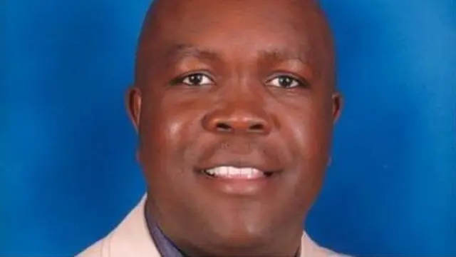
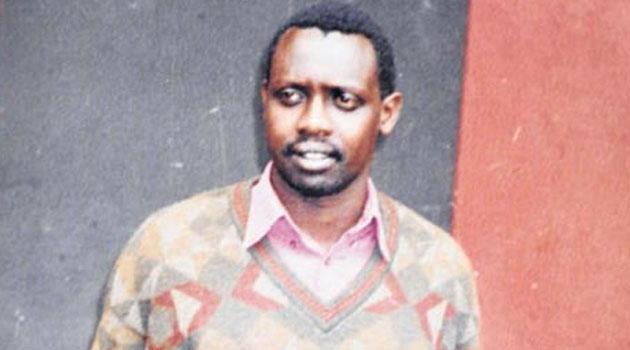

William Ruto's name has surfaced in connection with several high-profile murders in Kenya. One of the earliest cases was during the 2007-2008 post-election violence, where Ruto was accused by the International Criminal Court (ICC) of orchestrating attacks that led to numerous deaths, including the Kiambaa church fire where dozens perished. Although the ICC case against him was eventually dropped due to witness tampering and insufficient evidence, the allegations left a significant mark on his political career.
Another notable case is the murder of Jacob Juma, a businessman and government critic, in 2016. Juma had been vocal against Ruto on social media, accusing him of corruption. His assassination led to speculation and claims by some that Ruto had a motive for wanting Juma silenced, although direct evidence linking Ruto to the murder was never conclusively established.
The death of Meshack Yebei, a former bodyguard of Ruto, in 2015, also drew attention. Yebei was allegedly a key witness in the ICC case against Ruto. His body was found in Uganda, and it was suggested by some reports that his death might have been linked to preventing him from testifying against Ruto, though no direct link was officially confirmed.
More recently, there have been allegations of Ruto's involvement in the deaths of activists and critics. In 2023, the suspicious death of activist Ian Singoei was linked by some to government suppression of dissent, with claims that those close to Ruto might have played a role, though these remain unproven assertions without legal substantiation.
In 2024, the murder of Mercy Keino, a university student, was also mentioned in discussions around political abductions and killings. Although the government denied any involvement, some reports suggested that she was targeted due to her association with movements critical of Ruto's administration.
The hashtag #RutoMustGo has been used by detractors to highlight these cases, arguing that such incidents indicate a pattern of violence or negligence towards human life by those in power or close to Ruto. However, these allegations are often met with official denials, with the government asserting that investigations into these murders have not conclusively linked Ruto to any criminal acts.
Despite the absence of legal convictions directly implicating Ruto, the repeated association with these grim events has fueled public discourse on accountability and the need for transparent investigations into any potential wrongdoing. The shadow of these murder cases continues to loom over Ruto's political legacy, prompting ongoing calls for justice and scrutiny from civil society and human rights bodies.
In conclusion, while no definitive evidence has been presented in court to directly connect William Ruto to these murders, the persistent mention of his name in connection with violent deaths has contributed to a narrative of suspicion and demand for a clearer examination of the circumstances surrounding each case.